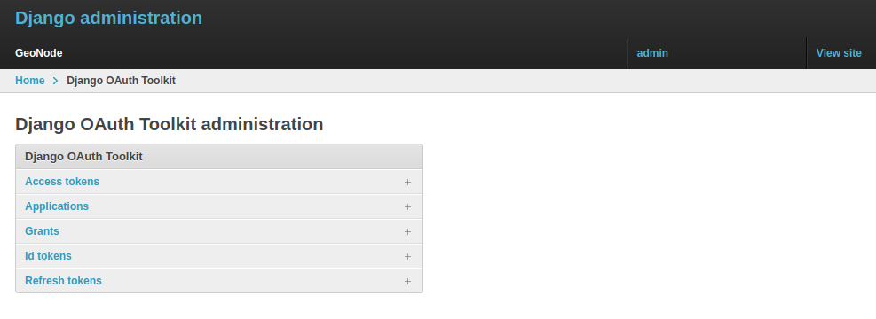
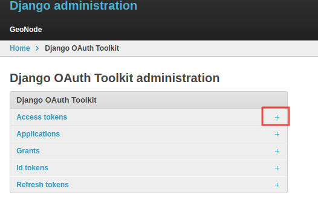
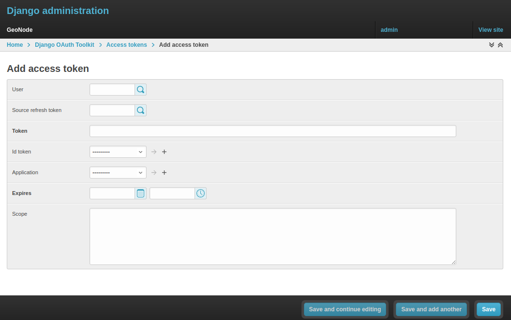
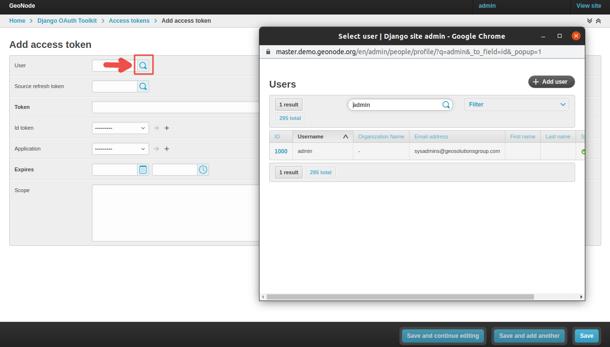
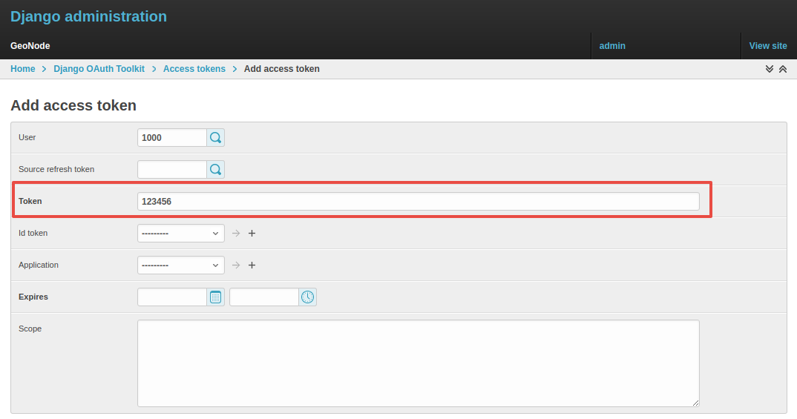
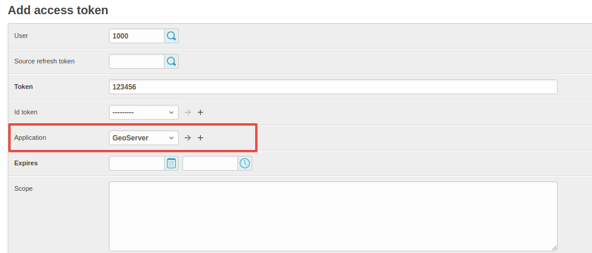
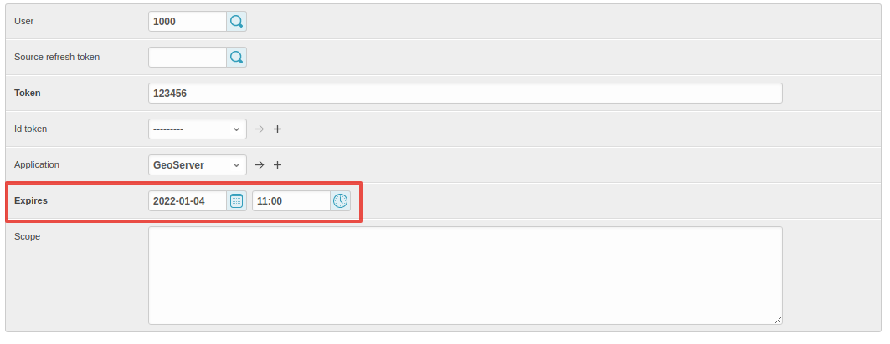
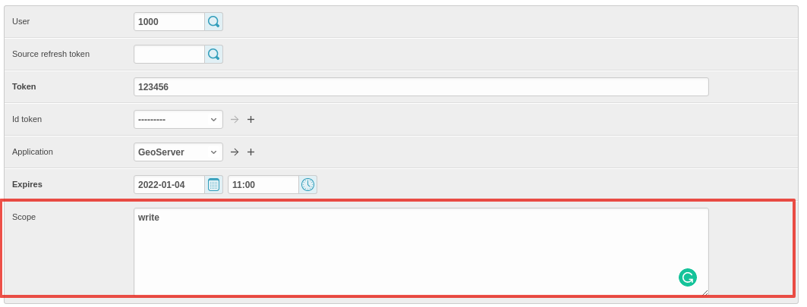

OAuth2 Access Tokens¶
This small section won't cover entirely the GeoNode OAuth2 security integration, this is explained in detail in other sections of the documentation
(refer to :ref:oauth2_fixtures_and_migration and :ref:oauth2_tokens_and_sessions).
Here we will focus mainly on the :guilabel:Admin > DJANGO/GEONODE OAUTH TOOLKIT panel items with a specific attention to the Access tokens management.
The :guilabel:Admin > DJANGO/GEONODE OAUTH TOOLKIT panel (as shown in the figure below) allows an admin to manage everything related to
GeoNode OAuth2 grants and permissions.
As better explained in other sections of the documentation, this is needed to correctly handle the communication between GeoNode and GeoServer.

Specifically from this panel an admin can create, delete or extend OAuth2 Access tokens.
The section :ref:oauth2_tokens_and_sessions better explains the concepts behind OAuth2 sessions; we want just to refresh the mind here
about the basic concepts:
-
If the
SESSION_EXPIRED_CONTROL_ENABLED <../../basic/settings/index.html#session-expired-control-enabled>_ setting is set toTrue(by default it is set toTrue) a registered user cannot login to neither GeoNode nor GeoServer without a validAccess token. -
When logging-in into GeoNode through the sign-up form, GeoNode checks if a valid
Access tokenexists and it creates a new one if not, or extends the existing one if expired. -
New
Access tokensexpire automatically afterACCESS_TOKEN_EXPIRE_SECONDS <../../basic/settings/index.html#access-token-expire-seconds>_ setting (by default 86400) -
When an
Access tokenexpires, the user will be kicked out from the session and forced to login again
Create a new token or extend an existing one¶
It is possible from the :guilabel:Admin > DJANGO/GEONODE OAUTH TOOLKIT panel to create a new Access token for a user.
In order to do that, just click on the :guilabel:Add button beside Access tokens topic

On the new form

select the followings:
-
User; use the search tool in order to select the correct user. The form want the user PK, which is a number, and not the username. The search tool will do everything for you.
-
Source refresh token; this is not mandatory, leave it blank. -
Token; write here any alphanumeric string. This will be theaccess_tokenthat the member can use to access the OWS services. We suggest to use a service like https://passwordsgenerator.net/ in order to generate a strong token string.
-
Application; select GeoServer, this is mandatory
-
Expires; select an expiration date by using the :guilabel:date-timewidgets.
-
Scope; select write, this is mandatory.
Do not forget to :guilabel:Save.
From now on, GeoNode will use this Access Token to control the user session (notice that the user need to login again if closing the browser session),
and the user will be able to access the OWS Services by using the new Access Token, e.g.:
https://dev.geonode.geo-solutions.it/geoserver/ows?service=wms&version=1.3.0&request=GetCapabilities&access_token=123456
Notice the ...quest=GetCapabilities&access_token=123456 (access_token) parameter at the end of the URL.
Force a User Session to expire¶
Everything said about the creation of a new Access Token, applies to the deletion of the latter.
From the same interface an admin can either select an expiration date or delete all the Access Tokens associated to a user, in order to
force its session to expire.
Remember that the user could activate another session by logging-in again on GeoNode with its credentials.
In order to be sure the user won't force GeoNode to refresh the token, reset first its password or de-activate it.